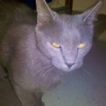
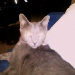

<?xml version="1.0" encoding="UTF-8"?>
<rss version="2.0"
	xmlns:content="http://purl.org/rss/1.0/modules/content/"
	xmlns:wfw="http://wellformedweb.org/CommentAPI/"
	xmlns:dc="http://purl.org/dc/elements/1.1/"
	xmlns:atom="http://www.w3.org/2005/Atom"
	xmlns:sy="http://purl.org/rss/1.0/modules/syndication/"
	xmlns:slash="http://purl.org/rss/1.0/modules/slash/"
	>

<channel>
	<title>Chronosynclastic Infundibulum &#187; amusing</title>
	<atom:link href="http://www.semanticoverload.com/tag/amusing/feed/" rel="self" type="application/rss+xml" />
	<link>http://www.semanticoverload.com</link>
	<description>The world through my prisms</description>
	<lastBuildDate>Thu, 07 Apr 2011 17:36:17 +0000</lastBuildDate>
	<language>en-US</language>
	<sy:updatePeriod>hourly</sy:updatePeriod>
	<sy:updateFrequency>1</sy:updateFrequency>
	<generator>http://wordpress.org/?v=3.5</generator>
		<item>
		<title>Look what the cat dragged in! Itself.</title>
		<link>http://www.semanticoverload.com/2010/08/26/look-what-the-cat-dragged-in-itself/</link>
		<comments>http://www.semanticoverload.com/2010/08/26/look-what-the-cat-dragged-in-itself/#comments</comments>
		<pubDate>Fri, 27 Aug 2010 04:07:48 +0000</pubDate>
		<dc:creator>Semantic Overload</dc:creator>
				<category><![CDATA[personal]]></category>
		<category><![CDATA[amusing]]></category>
		<category><![CDATA[cat]]></category>

		<guid isPermaLink="false">http://www.semanticoverload.com/?p=725</guid>
		<description><![CDATA[Last night, while I was watching TV, I heard loud crying. I walked out of my apartment to find myself in front of a crying cat! So I looked at it and said &#8220;What?&#8221; In response it just walked in and claimed the apartment as its own! I guess it has adopted me now :&#124; [...]]]></description>
				<content:encoded><![CDATA[<p>Last night, while I was watching TV, I heard loud crying. I walked out of my apartment to find myself in front of a crying cat! So I looked at it and said &#8220;What?&#8221; In response it just walked in and claimed the apartment as its own!</p>
<p>I guess it has adopted me now :| Here he is:</p>
	<div class='gallery' id='gallery_1'>
							
<a href='http://www.semanticoverload.com/2010/08/26/look-what-the-cat-dragged-in-itself/img_20100826_221445/' title='IMG_20100826_221445'></a>
<a href='http://www.semanticoverload.com/2010/08/26/look-what-the-cat-dragged-in-itself/img_20100826_221235/' title='IMG_20100826_221235'></a>

						</div>
						

]]></content:encoded>
			<wfw:commentRss>http://www.semanticoverload.com/2010/08/26/look-what-the-cat-dragged-in-itself/feed/</wfw:commentRss>
		<slash:comments>2</slash:comments>
		</item>
	</channel>
</rss>
